Broodfall: bug hunt
November 22, 2026. I played it in the real page with real clicks and keys at 1366×768, 1920×1080 and your 2781×1401: a new campaign through mission 1, the reveal, the ship and a deployment, skirmishes through the organ stage and a district draft, Settings, save and exit, resume, every room aboard, the codex, comics and a full run to victory. No console errors and no missing files anywhere.
| # | Problem | Verdict |
|---|---|---|
| 1 | The board did not fill the window: a fixed picture in the middle with black on both sides (1360 of 2781 pixels across on your screen) | Fixed |
| 1b | After fix 1, the landing film's last frame would have landed in the wrong place on the board, which would have brought back the snap you reported | Fixed |
| 2 | On the organ stage the summary said "GUT LV3" while the Gut's card said LV 1, with nothing explaining the difference | Fixed |
| 3 | While a district draft was open, the line under the board said "WAVE SETUP: place limbs, then START THE WAVE (Space)", but Space does nothing there | Fixed |
| 4 | The "WAVE 3 CLEARED · +57 CHYME" banner sat on top of the district you were placing | Fixed |
| 5 | After you change the turn keys in Settings, the turn buttons still said Q and E | Fixed |
| 6 | At 1366×768 the top bar cut words off: "DIRECTIVE: DESTROY THE…" and "NEXT: 8 RESPON…" | Fixed |
| — | Two automatic tests were failing because of the other session's unfinished Rumen work | Fixed by that session; all tests pass |
1. The board now fills the window
The board was always drawn as a fixed 1360×1000 picture and then shrunk to fit, so on wide windows it sat in a column with black on both sides. On your screen it used 1360 of 2781 pixels across. Now the board fills the window at every size, and the city looks bigger on your screen. Clicking, zooming and turning work the same as before, and it runs just as smoothly: 60 frames a second in a wave on your window size, the same as the old fixed board.
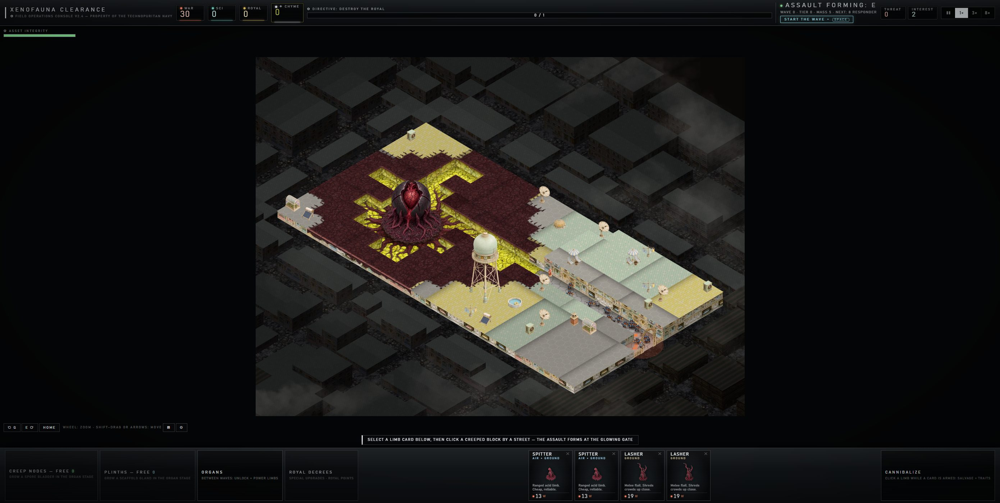
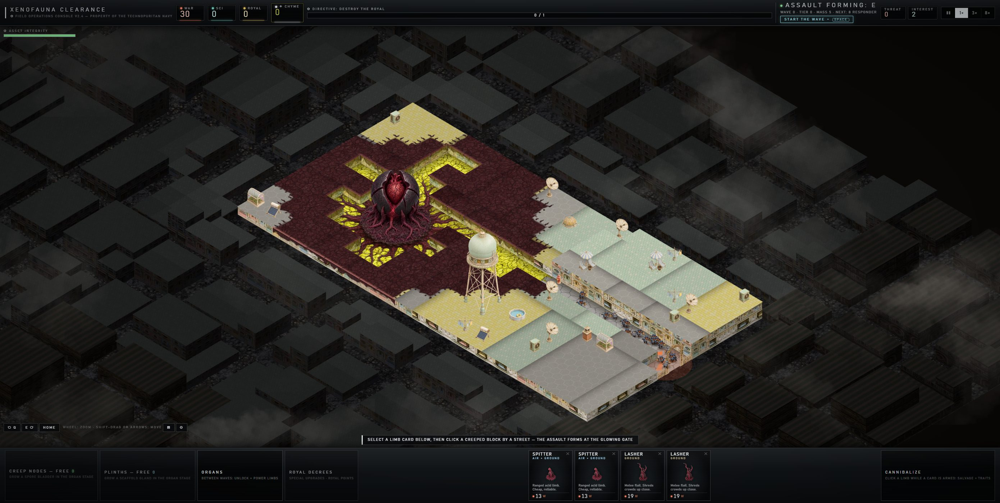
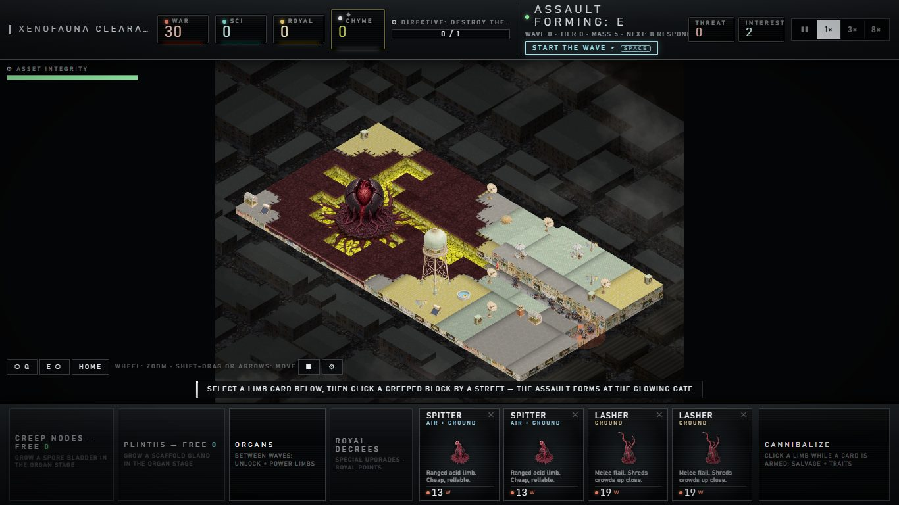
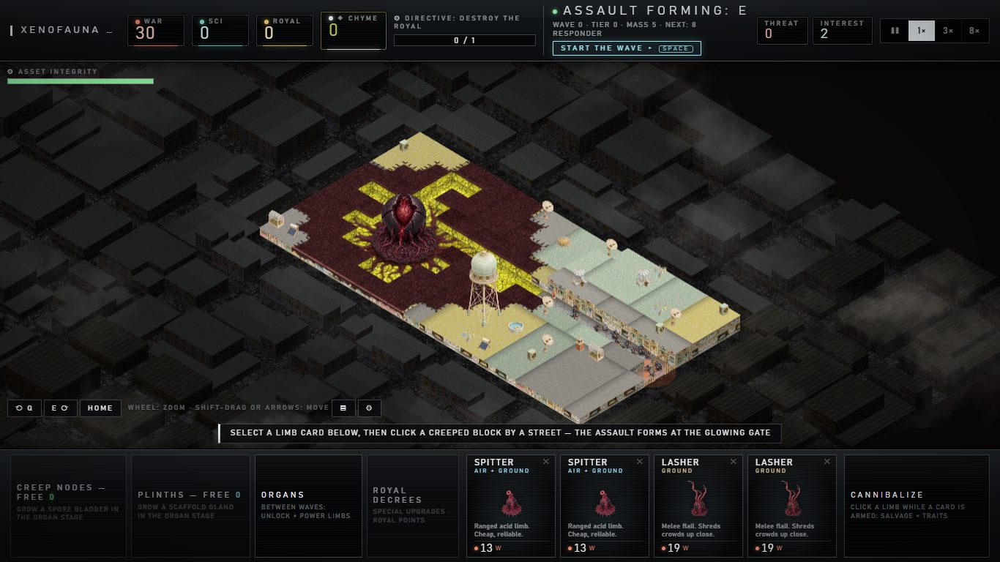
1b. The landing film still lands exactly on the board
Each landing film ends on a picture of the board as the old fixed board showed it. When the film ends, that picture has to sit exactly on top of the live board, or you get the snap you reported earlier today. Fix 1 changed the board's size, so I changed the handoff to work from how large the board is actually drawn now, with the film's crater pinned on the live meteor. To check it, I laid the film's last frame over the live board at half strength. The pictures below show where the old calculation would have put it and where the new one does. Where the two line up exactly, you see one board and no double image.
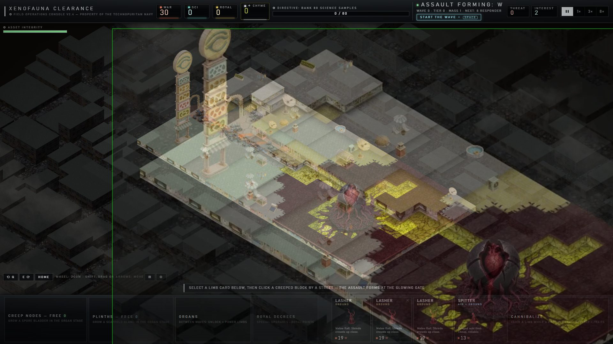
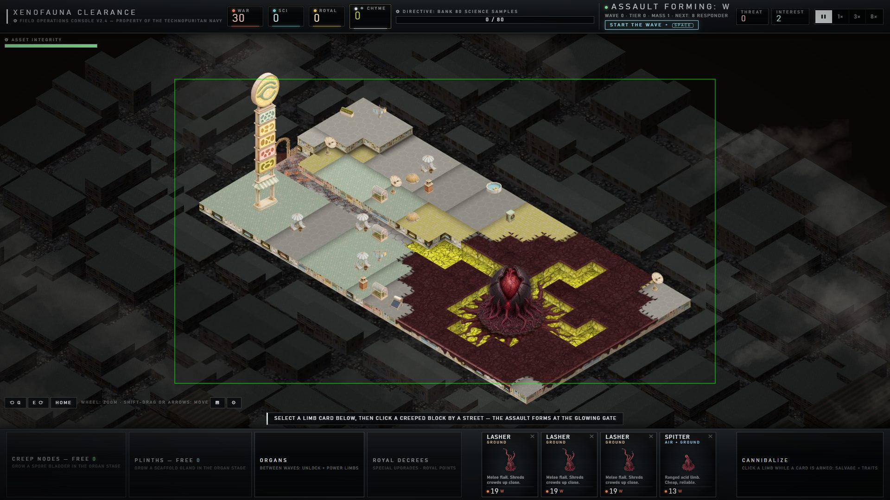
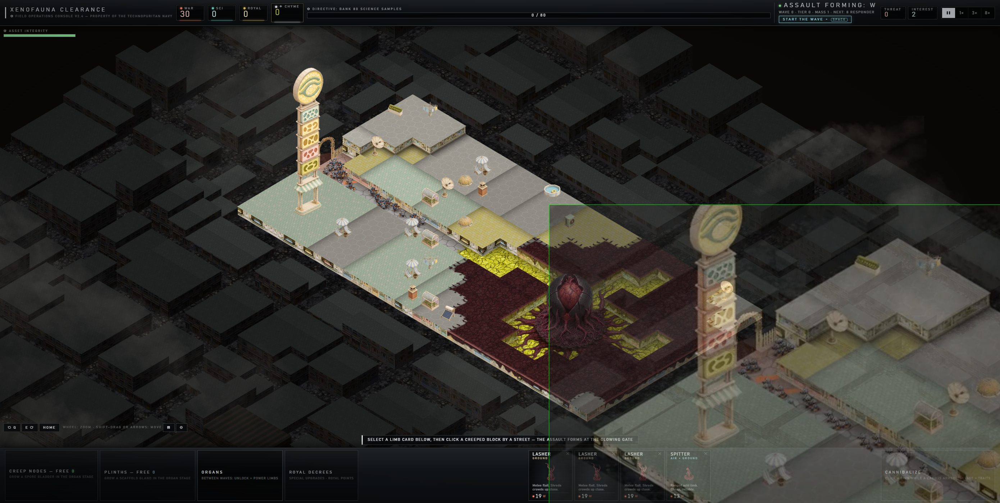
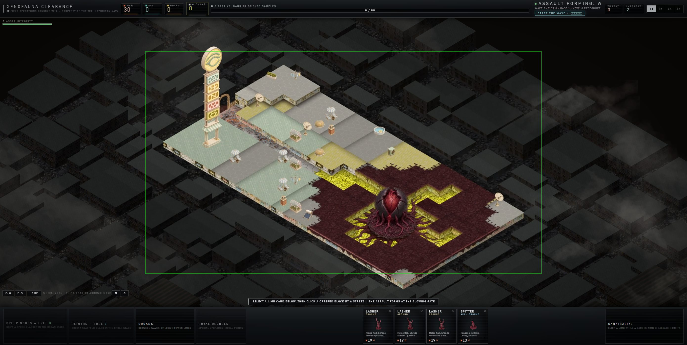
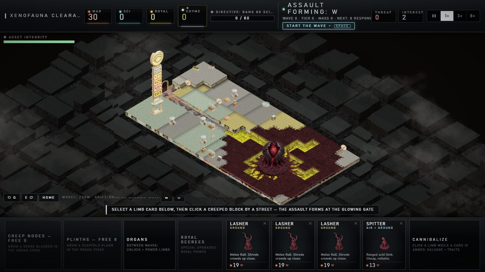
2. The organ stage now says why an organ is above its card's level
In mission 1 the Gut sits on a Sewer Main, which it favours, and that adds two levels. Its card showed the level you bought (LV 1), while the summary under the board showed the total (LV3), so the two numbers looked like a mistake. The summary now says where the extra levels come from: "GUT LV3 (LV1 bought, +2 from the Sewer Main)". A heart's zone is named the same way.
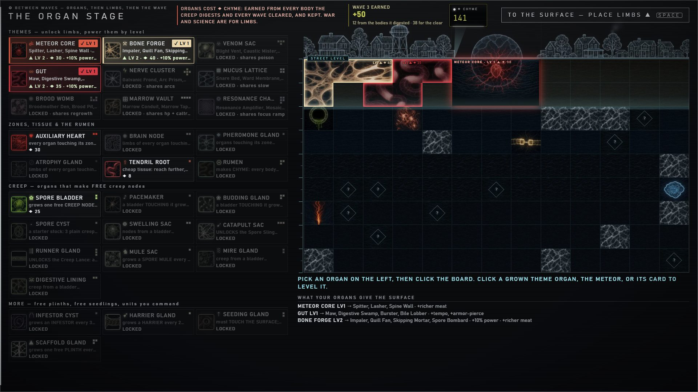
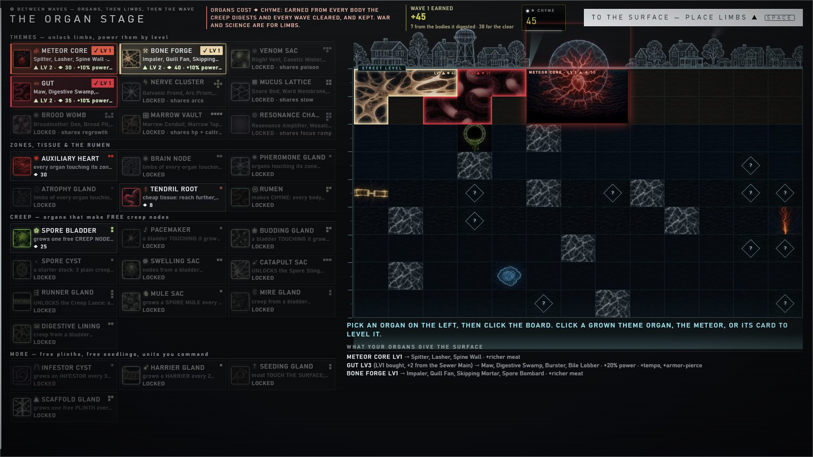
3. The line under the district draft no longer tells you to start the wave
While "The body is ready to grow" was open, the line under the board still showed the wave-setup instruction from before the wave. It now says to choose a district and place it, and it updates whenever the game moves to the next stage.
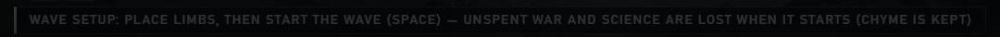
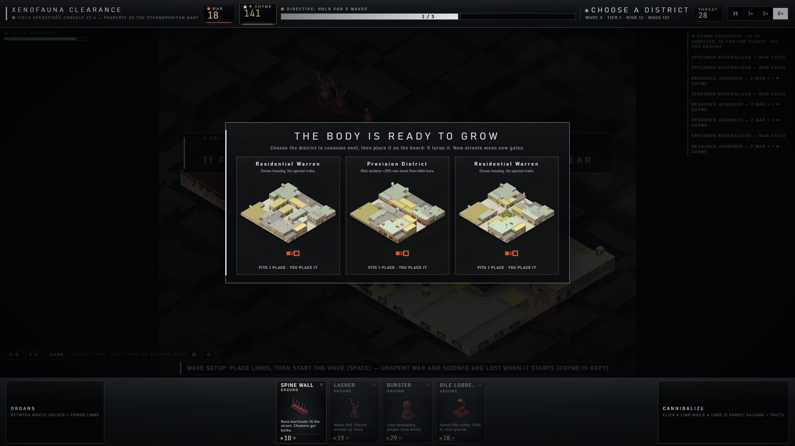
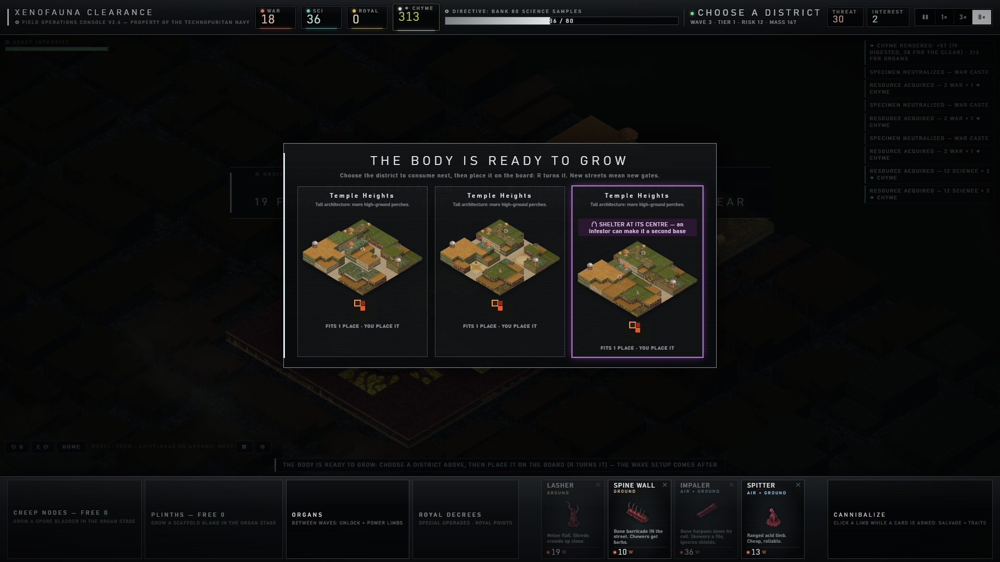
4. The wave banner no longer covers the district you are placing
When you picked up a district card, the "wave cleared" banner stayed across the middle of the board, right over the green district you were placing. Picking up the card now clears the banner.
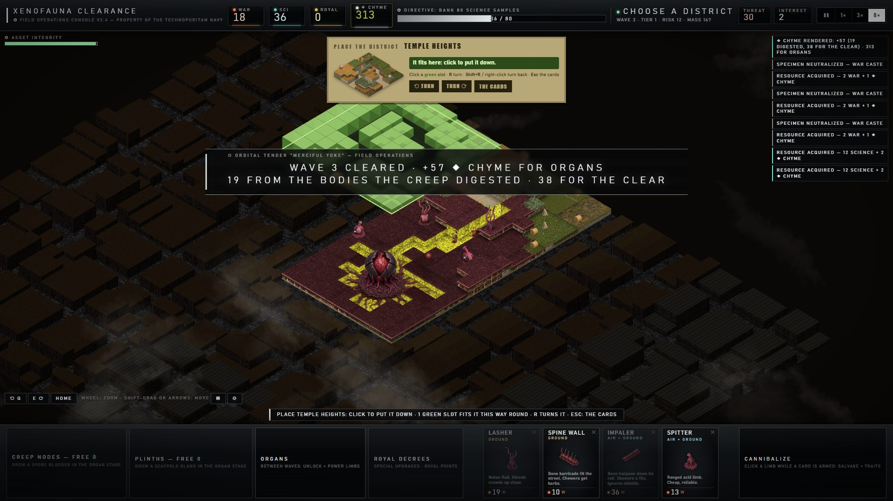
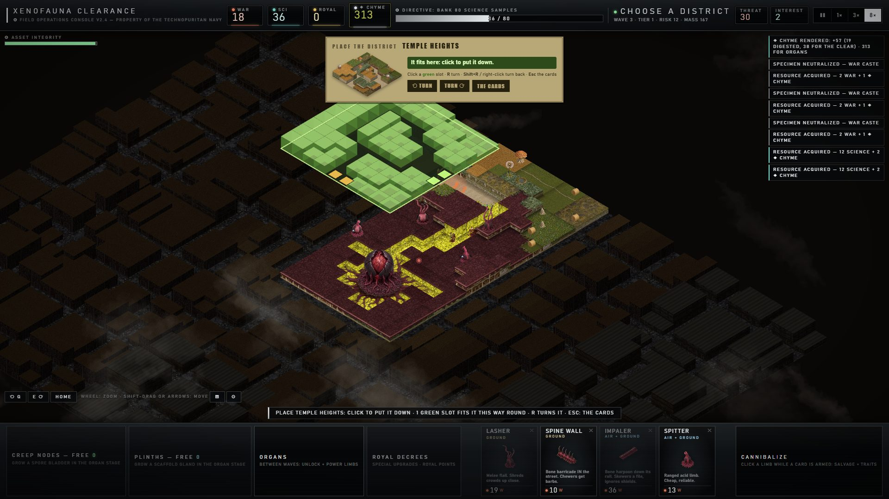
5. The turn buttons show the keys you chose
In Settings I changed the turn key from Q to Z. Z turned the view and Q stopped doing anything, but the buttons beside the board still said Q. They now show the keys you set, and so does the hint for the big limbs.
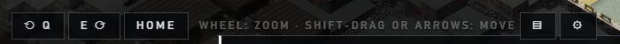
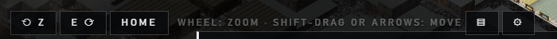
6. The top bar at 1366×768 shows the directive and the next wave in full
The game's title kept its space and the important words were cut off. On smaller windows the title now gives up its space first, and the directive and the wave line wrap onto two lines instead of being cut.
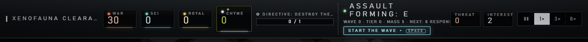
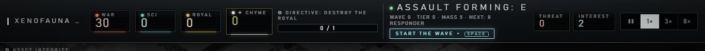
Checked and working, no change needed
- Settings, each changed by clicking during a run: the larger text sizes (nothing pushed off screen at 1366), changing the turn keys, edge scrolling, the speed a deployment starts at, and Save and Exit followed by Resume Deployment (same wave, limbs and meat).
- The organ stage: growing organs by clicking, leveling by clicking the card and by clicking the organ on the board (chyme taken each time), and Space going one step at a time from the organ stage to the surface to the wave.
- Placing a district with the mouse on the green slot.
- The campaign from start to finish: new campaign, mission 1 (both won and lost), the report, the reveal, the ship, a deployment, the debrief and back aboard. Every room aboard opens without errors, as do the codex, comics and settings from the ship, and the menu's Continue and Codex.
- A whole run to victory at your window size with no errors. The end-of-run report shows its picture of the board correctly at the new board size.
For an engineer or an AI: the technical write-up is C:\Users\Merry\dev\space-derelict\games\broodfall\notes\2026-11-22-bughunt.md. Commits 1eb1e4c0, 74263ebb, 9a2bda2a, 1c4dd372, d47a714f, 965246a7 and the commit that adds this page.